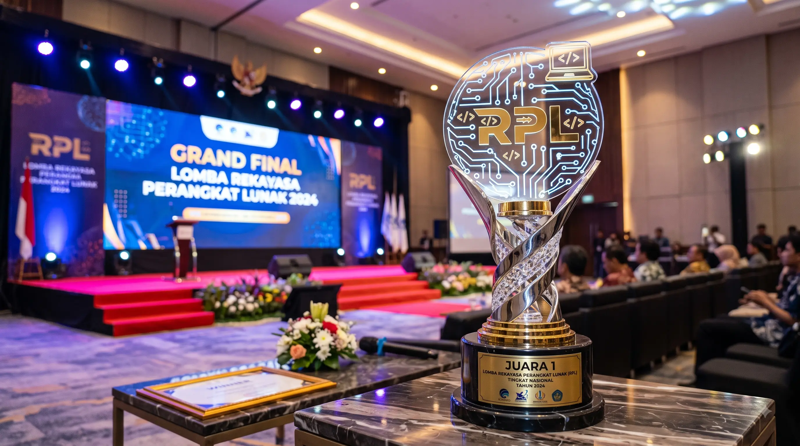

Berita Terbaru

12 Agustus 2024 • Prestasi
Siswa SMK Negeri 2 Depok Sleman Juara 1 Lomba Web Design Tingkat Nasional
Prestasi membanggakan kembali ditorehkan oleh siswa jurusan Rekayasa Perangkat Lunak yang berhasil meraih juara pertama dalam ajang kompetisi desain web tingkat nasional tahun ini.
Baca Selengkapnya
05 Agustus 2024 • Acara Sekolah
Pelaksanaan Kunjungan Industri ke Perusahaan Teknologi Terkemuka
Ratusan siswa mengikuti kegiatan kunjungan industri guna memperluas wawasan dan melihat langsung proses kerja profesional di berbagai perusahaan teknologi berskala nasional dan internasional.
Baca Selengkapnya
01 Agustus 2024 • Informasi
Sosialisasi Kurikulum Merdeka Berbasis Vokasi untuk Tahun Ajaran Baru
Pihak sekolah menyelenggarakan sosialisasi penerapan Kurikulum Merdeka yang dirancang khusus untuk memperkuat kompetensi vokasi dan kesiapan kerja siswa di masa depan.
Baca Selengkapnya